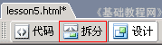
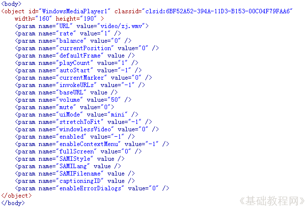

Dreamweaver 8 基础入门教程
七、插入视频 返回
这一节我们来学习如何在页面插入视频，常见的视频格式有wmv、avi、mpg、rmvb等等，视频文件一般既有声音又有图像，因此也叫影片，下面我们来看一个练习；
1、启动Dreamweaver
1）点击“开始－所有程序－Macromedia－Macromedia Dreamweaver 8”， ；
；
2）在中间的“创建新项目”中点第一个 HTML，打开一个空白文档，把标题改为“插入视频”；

3）点“文件－保存”命令，以 chrshp 为文件名保存文件，保存位置在建立的站点中；
4）在右面侧边栏的站点中，新建的文件夹 video ，用来保存视频文件；
本课images文件夹中有一个首 zj 文件可以作为练习，它是wmv格式的；
2、插入视频
1）在标签下面的“文档”工具栏中点一下“拆分”标签，窗口分成两部分，上边是代码，下边是文档；

2）在上面的代码窗口中，找到<body>标签，在它后面点一下鼠标，然后按一下回车键插入一个空行，

3）切换到英文输入法状态，输入下列代码：
<object id="WindowsMediaPlayer1" classid="clsid:6BF52A52-394A-11D3-B153-00C04F79FAA6"
width="160" height="190" >
<param name="URL" value="video/zj.wmv">
<param name="rate" value="1" />
<param name="balance" value="0" />
<param name="currentPosition" value="0" />
<param name="defaultFrame" value />
<param name="playCount" value="1" />
<param name="autoStart" value="0" />
<param name="currentMarker" value="0" />
<param name="invokeURLs" value="-1" />
<param name="baseURL" value />
<param name="volume" value="50" />
<param name="mute" value="0" />
<param name="uiMode" value="mini" />
<param name="stretchToFit" value="-1" />
<param name="windowlessVideo" value="0" />
<param name="enabled" value="-1" />
<param name="enableContextMenu" value="-1" />
<param name="fullScreen" value="0" />
<param name="SAMIStyle" value />
<param name="SAMILang" value />
<param name="SAMIFilename" value />
<param name="captioningID" value />
<param name="enableErrorDialogs" value="0" />
</object>

采用复制粘贴的方法即可，里面修改的地方主要是蓝色部分，影片地址、宽度和高度，
注意播放器有70的高度，因此整个高度是190，影片实际大小为160×120，在影片属性中可以查看到；
保存一下文件，点预览按钮，点左边的播放按钮，看一下影片的效果；
本节学习了插入视频文件的基本方法，注意param标签的用法，如果你成功地理解并完成了练习，请继续学习下一课内容；
本教程由86团学校TeliuTe制作|著作权所有
基础教程网：http://teliute.org/
美丽的校园……
转载和引用本站内容，请保留版权信息和本站链接。